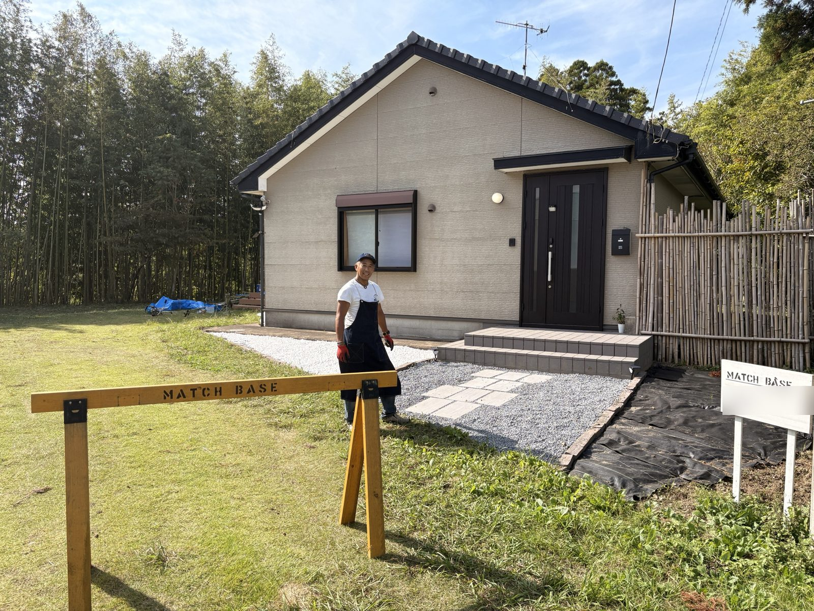
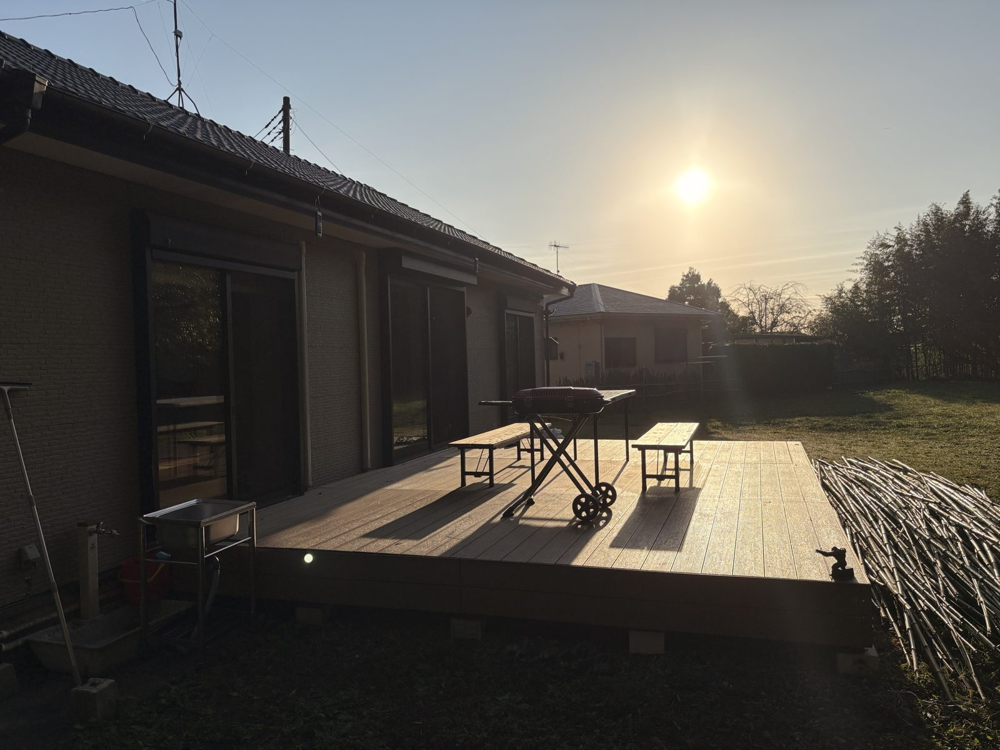
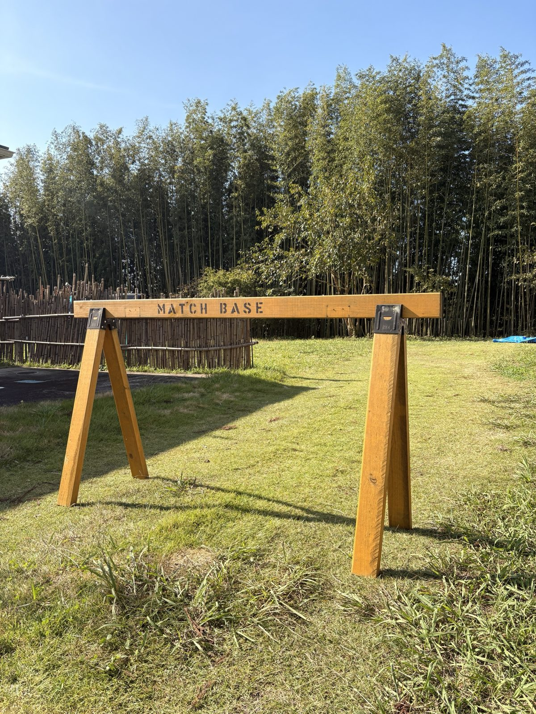
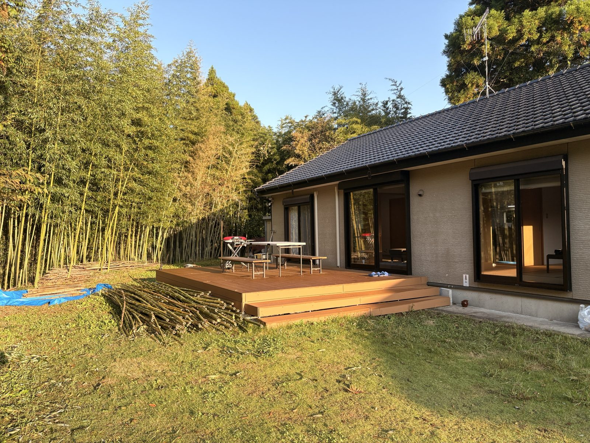
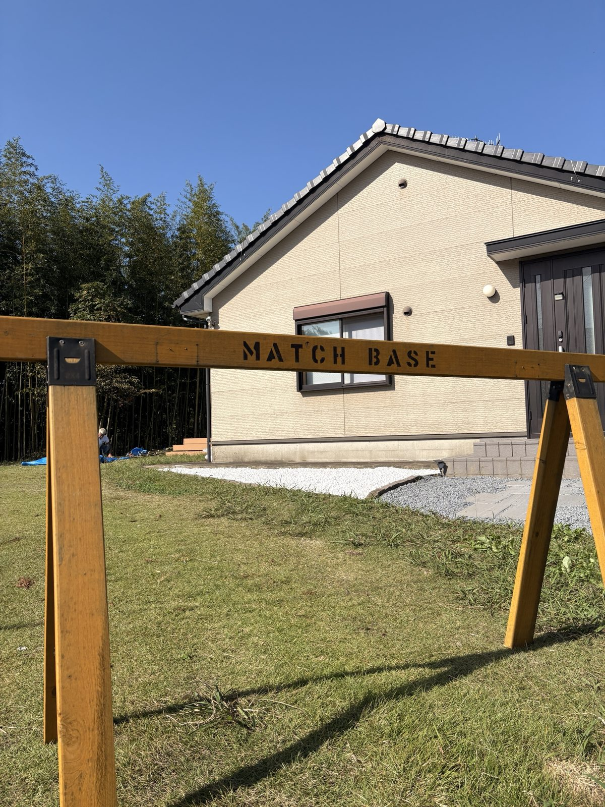

仲間と飯を食って、火を囲んで、朝は海に入る。そのための家。
ウッドデッキで肉を焼いて、夜は焚き火を囲んで、朝は海に入る。そんな休日を、気の合う仲間と過ごしたくて作りました。
店でも民泊でもないので、料金表も予約サイトもありません。ここは俺の家で、来てくれる人はお客さんではなく、一緒に楽しむ仲間です。

GOOD MORNING庭の焚き火台は、「焚き火がしたい」と言った仲間が自分で持ってきてくれたものです。俺一人では思いつかなかったことが、仲間のおかげでどんどん増えています。
「こんなことやりたい」があれば、気軽に教えてください。いいなと思ったら、一緒にやりましょう。

HANDMADEここは俺の家です。思ったようにならないこともあると思いますが、「そういう場所だよな」と笑って付き合ってもらえると嬉しいです。そのほうが、お互い気楽に楽しめます。
日程が重なることもあります。先に来ている人がいたら、それも縁です。一緒に飲んで、話して、新しい仲間になってください。ここで知り合った人同士の輪が広がっていくのが、俺にとって一番の楽しみです。

DETOXMatch Baseのまわりには、竹林と芝生があります。ここに来ると、竹刈りや芝刈りをやることがあります。
若い子にはだいたい嫌がられます。ところが大人は、気づくと楽しそうに黙々と没頭しています。スマホも見ないで汗をかいて、刈り終わった庭を眺める。終わるころには、頭の中がすっきりしているはずです。
やるかどうかは自由です。一度やってみると、たぶん次も「やらせて」と言いたくなります。

他にもいい店があるはずなので、一緒に探していきましょう。
魚のうまい寿司屋です。海に近い場所にあることが、食べると分かります。
海鮮がうまくて、量がすごい食堂です。いすみなのに行列ができます。腹を空かせて行ってください。
説明はしません。連れていくので、来てからのお楽しみです。
このあたり、現金しか使えない店が多いです。スマホだけで来ると、寿司もスナックも見てるだけになります。お札を何枚か、財布に入れて来てください。
タオルはベースに用意していないので、自分のを持ってきてください。
布団はあるので、寝袋はいりません。
いただいた分は、次にみんなで楽しむことに使います。新しい道具を買ったり、うまい肉を用意したり。カンパが増えると、できることが増えます。
若い人も大歓迎です。友達を連れてくるのもいいです。ここで過ごして、「あそこ楽しかったな」と思い出してもらえたら、それで十分です。
読んで「いいな」と思った人は、Matchに直接LINEをください。空いていれば、いつでも「いいよ」と言います。
連絡は、MatchのLINEまで。詳しい場所は、LINEをくれた人に伝えます。